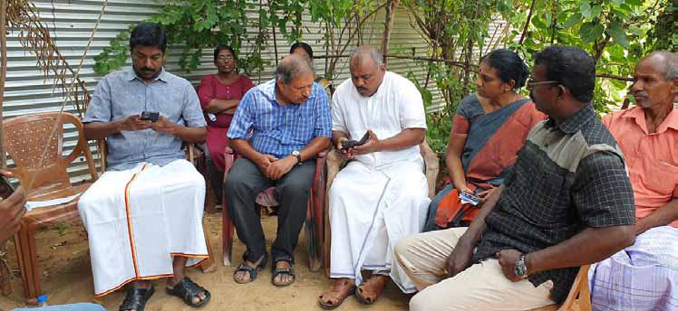

The Canadian Mirage:
The Canadian Mirage:
Jaffna Monitor hellojaffnamonitor@gmail.com 26 I n Jaffna, Sri Lanka, there exists a deep- seated yearning among its youth for what is believed to be a better life in Canada, a narrative that has become almost as common as the waves lapping its shores. However, this dream has also given rise to a murky underbelly of exploitation and false promises. This is highlighted in a recent incident involving a young man from Jaffna and a fraudulent individual posing as a journalist. The allure of Canada, long perceived as a dreamland by Sri Lankan Tamils and known for its relatively accessible visa policies for Sri Lankans in recent times, has transformed into an almost feverish aspiration. Reports suggest that in the past year alone, approximately 20,000 youths from the North—an estimated unverified—have made their way to Canada on various visas. Fueling this exodus is a booming visa industry, with the going rates ranging from a staggering 65 lakhs to 1.5 crores for a visiting visa. The youths of Jaffna, both employed and unemployed, are willing to pay The Canadian Mirage: Monitor Memo Exploitation of Jaffna's Youth in Pursuit of Overseas Dreams By: Our Reporter
Jaffna Monitor hellojaffnamonitor@gmail.com 27 these sums despite the lack of any guarantee of securing permanent residency upon arrival in Canada. The recent arrest in Jaffna of a man who exploited these dreams vividly illustrates the themes of desperation and deceit. Posing as a journalist, the man tricked a local young man with promises of attending a major music event in Canada featuring the renowned Indian music director Santosh Narayanan. The youth, who had no connections to journalism, was misled by the con artist who claimed he could obtain a journalistic ID for him. This ID, the con artist reportedly promised, would facilitate his travel to Canada under the guise of covering Santosh Narayanan's music event. In exchange for this promise, the con man extorted 4.3 million rupees and provided a fake journalist identity card as part of the agreement. As days turned into weeks with no sign of the promised event, the young man, realizing the deceit, sought to reclaim his money, only to find the fraudster had vanished. The police, upon receiving the complaint, launched a thorough investigation, leading to the discovery that the suspect was hiding in Vavuniya and that the purported media company was a sham-operated by the fraudster himself. This incident underscores the dire straits in which many Sri Lankan youths find themselves willing to risk everything for a chance at life abroad. It also sheds light on the troubling exploitation by those who prey on these dreams, turning hope into despair. As the economic and political landscapes in Sri Lanka continue to challenge its people, the youth, who represent the future of the nation, are caught in a crossfire of hope and desperation. They are continually searching for their own slice of peace and prosperity, however elusive it may seem.
Jaffna Monitor hellojaffnamonitor@gmail.com 28 Political Dynamics in Shanthan's Case: I n a recent Facebook post, Mathisutha, the brother of the late Shanthan, also known as T. Suthenthirarajah—a former convict in the assassination case of Prime Minister Rajiv Gandhi—expressed an indirect criticism towards certain Tamil nationalist politicians. He specifically acknowledged the crucial support his family received from three politicians: S. Shritharan, the newly elected president of Ilankai Tamil Arasu Kachchi; Douglas Devananda, A Brother's Revealing Post TNPF spokesperson Sugash Kanagaratnam and TNPF Secretary S. Kajendran at Shanthan's funeral By: Our Reporter

Jaffna Monitor hellojaffnamonitor@gmail.com 29 the fisheries minister and leader of the Eelam People's Democratic Party (EPDP); and Angajan Ramanathan, a Jaffna parliamentarian from the Sri Lanka Freedom Party. Mathisutha emphasized the unwavering support these individuals provided, especially to his mother, which included 24-hour contact availability. He highlighted that, despite some reluctance to openly discuss his brother's case due to potential diplomatic tensions with India, these politicians prioritized humanitarian assistance over political concerns. Neutral observers have criticized leaders of the Tamil National People's Front (TNPF), including Gajendrakumar Ponnambalam, Selvarajah Kajendran, Sugash Kanagaratnam, and others, for allegedly using Shanthan's death to further their political motives. According to these observations, these TNPF politicians, who reportedly did not contribute to efforts for Shanthan's release or the repatriation of his remains, are accused of manipulating his death for political rallies in Sri Lanka. This action has been perceived as the embodiment of distasteful politics. In Mathisutha's post, he explicitly acknowledges the genuine assistance provided by Sritharan, Douglas Devananda, and Angajan Ramanathan in his brother's case. Mathisutha's message is perceived by some as a subtle rebuke of the TNPF leaders, highlighting the irony in their actions compared to the true support his family received. The actions of the TNPF leaders, which have been characterized as opportunistic, seem to have diminished the earnest efforts of the politicians who genuinely supported the family in a crucial time. At this point, Mathisutha's subtle yet powerful criticism underscores the contrast between the genuine aid provided by some and the self-serving motives of others. Sritharan Angajan Ramanathan Douglas Devananda